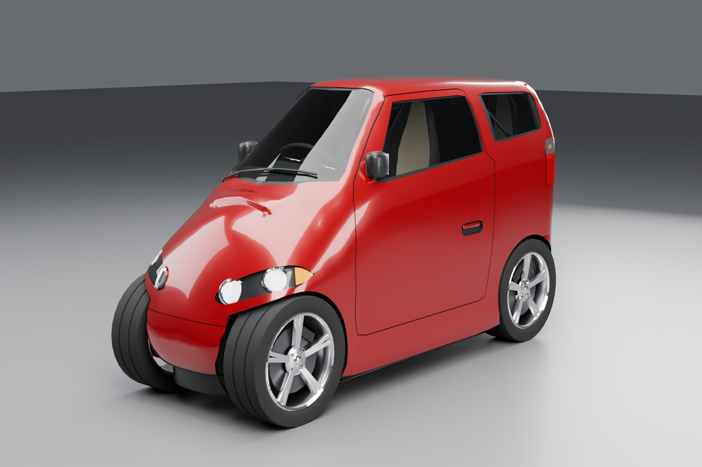
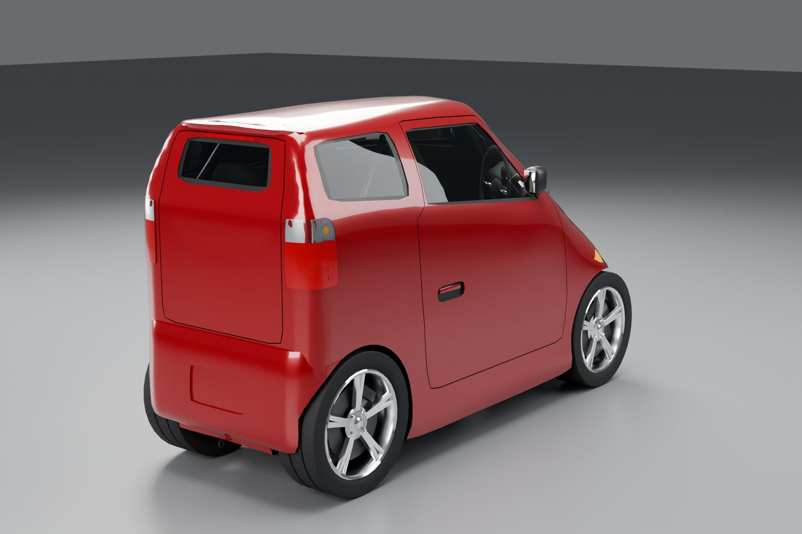
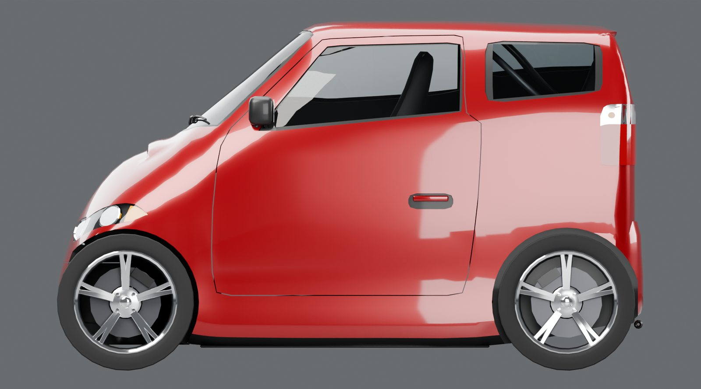
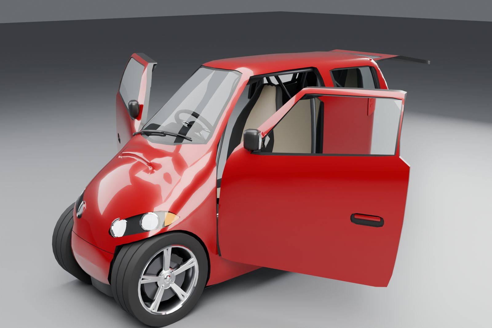
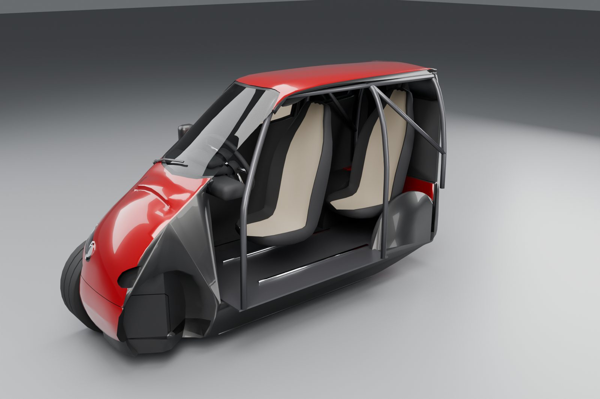

Tandem T6
A tiny tandem two-seat electric car add-on for Grand Theft Auto IV: The Complete Edition (PC).
A one-metre-wide electric tandem two-seater, built from scratch for GTA IV. The driver sits in front and one passenger sits right behind, and everyone climbs in through the front doors. A heavy battery in the floor keeps it planted: it shrugs off hard corners and kerbs without rolling over, but it still spins and drifts like a GTA car. It is an add-on car, so no stock vehicle is replaced.

Download
Then follow the install guide.
 |  |
 |  |
Renders of the mod's own model. It comes in several paints, for example blue.

Features
- Add-on car
tandemt6: spawn it with any trainer that spawns cars by model name. No stock car is replaced. - Tandem seating: driver in front, one passenger directly behind. Both get in through the front doors, and the rear passenger can climb in even when the driver is already sitting there.
- Ride in the back: hold the Enter vehicle button next to a Tandem T6 driven by a friend or a companion.
- Battery-weight stability: the heavy floor battery keeps it upright through hard corners and kerb strikes. It only lets go in really big crashes, and it rights itself if it ends up on its side. Spins and donuts still work.
- Live stats on screen: power in kW, speed in mph and km/h, motor rpm, body roll and cornering g. Automatic 0-60 mph, 0-100 km/h and quarter-mile timers start by themselves from a standstill, and your session's best times show on a card when you get in.
- 20 original sounds: motor whine and growl that follow speed and throttle, a launch bite with a tyre chirp, carbon doors, the front seat sliding for the rear passenger, wind, body rattle, impacts and more.
- Body damage and deformation, like the stock cars.
- No battery to recharge: drive as far as you like.
- Every setting in one file (
plugins/TandemT6.ini), and you can change settings while you play.
Requirements
- Grand Theft Auto IV: The Complete Edition for PC, version 1.2.0.59 (Steam or Rockstar Games Launcher) on Windows, or on a Mac with CrossOver
- FusionFix 5.1.1 or newer by ThirteenAG and team: it loads the
pluginsfolder (it includes the ASI loader) and theupdatefolder where the car lives - Aru's C++ ScriptHook 0.5.1 (
ScriptHook.dll) plus the Complete Edition hook fix (aCompleteEditionHook.asi): Hook fixes for Complete Edition. The car's plugin runs as a ScriptHook script - Optional: a trainer that spawns add-on cars by model name, for example Liberty's Legacy 2.4.1
None of these are included. Get them from their authors' pages.
Controls
See docs/CONTROLS.md for keyboard and controller.
Known issues
- No horn, engine or tyre-skid sounds from the game itself. GTA IV gives add-on cars no audio entry of their own, and that file can't be shipped with a mod. The car's own sounds cover the motor, launch, doors, seat, wind, rattles and impacts, but the horn is silent.
- Companions boarding the rear seat is the least tested part. If a bodyguard or friend gets stuck at the door, step away a few metres and let them try again, and please report it.
- Text slot: the car's name and on-screen hints use the game's
<language>7.gxttext files. Another mod that uses the same slot will clash with it. Tell us and we'll move to another slot. - On-screen stats sit on the right-hand side of the screen and can overlap other HUD mods. Move them with
[Hud] X,Y,CardXandCardYinplugins/TandemT6.ini. - The data lines are added by hand: there is no installer (see docs/INSTALL.md).
- Developed and tested on a Mac with CrossOver. Windows should behave the same, but it hasn't been tested yet.